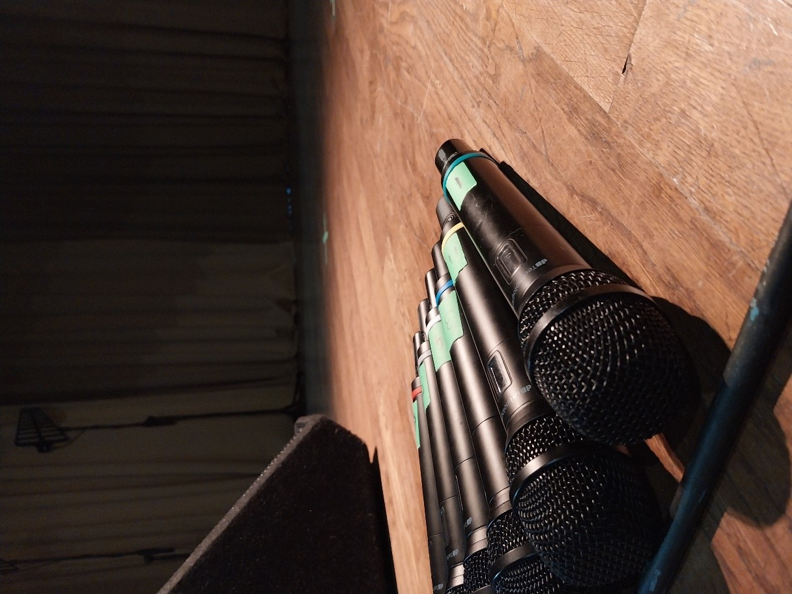
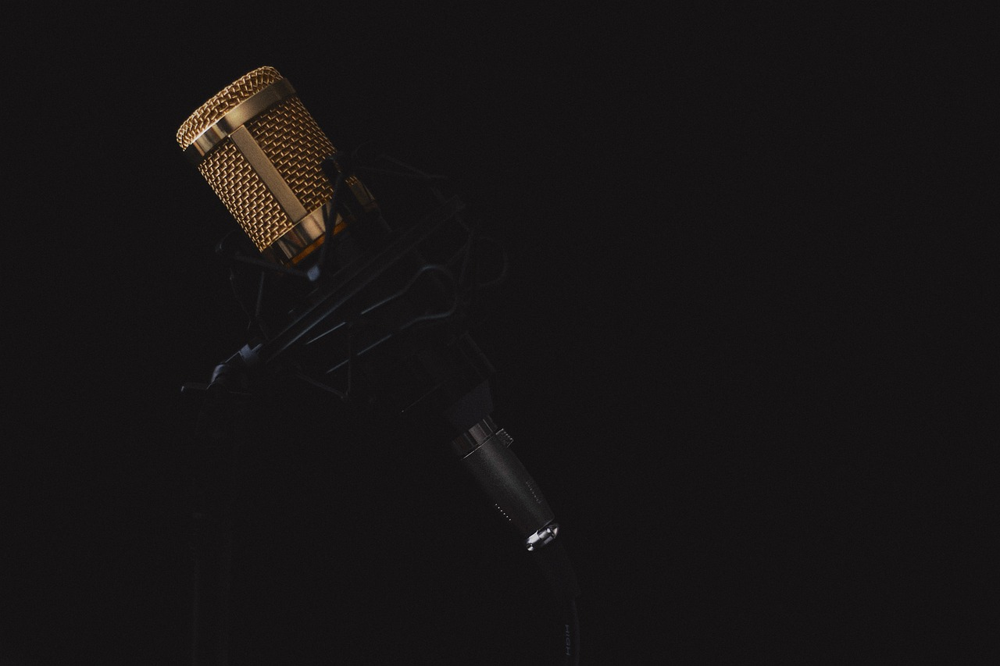

- izbor teme
- kaj zajem videoposnetka vsebuje
Uvod
Izbor teme
Videoprodukcija je zelo široka tema, ki zajema tako zajem videoposnetka, kot tudi nadaljne oblikovanje in dokončevanje videoposnetkov, pri glasbi pa videospotov. Zato sem se osredotočila na prvi del, torej zajem videoposnetka, ki je pri videoprodukciji zelo pomemben za nadaljne preoblikovanje posnetka. Največ pozornosti pa sem namenila pripravi na zajem videoposnetka in na koncu tudi osebju oziroma zaposlenim v videoprodukciji, tako pri zajemu posnetka kot tudi pri nadaljnem delu v produkciji.
Kaj zajem videoposnetka vsebuje?
Priprava na zajem videoposnetka vsebuje organizacijo videoprodukcije, pri kateri so najpomembnejši elementi: planiranje, scenarij, produkcijski
plan, produkcijski sestanki, priprave in vaje, in izvedbo zajema videoposnetka, pri katerem pa so najpomembnejši elementi: režija, snemanje,
oprema za zajem videa, osebje oziroma zaposlene v videoprodukciji in osvetlitev.